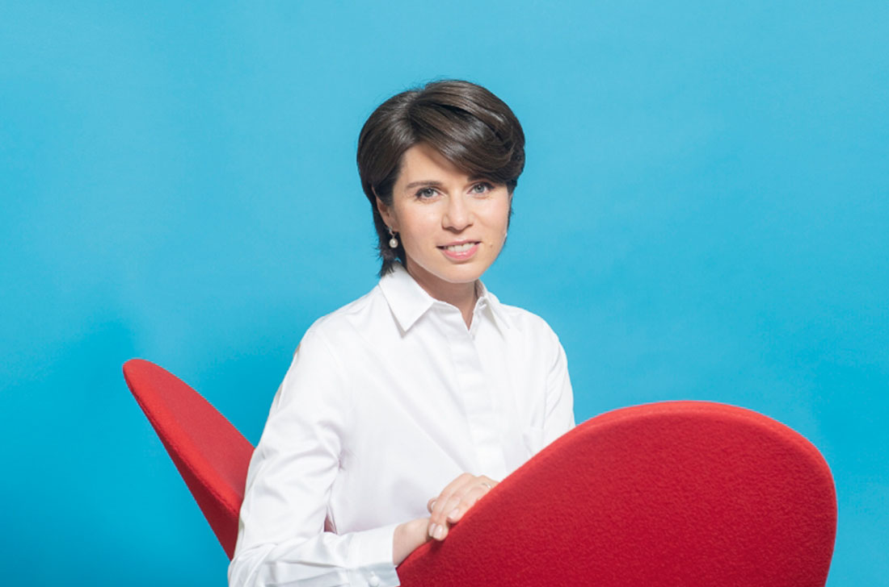

| Специалисты | Образование | Описание |
Профессиональные интересы | Фотография |
| Анна Никулова | Врач-терапевт, выпускник Canadian School for Natural Nutrition | Анна Никулова — адепт интегрированного подхода к здоровью и долголетию.
Эксперт объединяет академические знания и тренды в диетологии, трансформируя их в доступные практики управления самочувствием. |
- Образовательные проекты, направленные на повышение
грамотности среди населения о гомеопатическом методе лечения.
- Бизнес-инициативы, нацеленные на адаптацию «профильных» знаний о здоровье человека и их распространение в виде полезных практик, доступных многим.
- Здоровый образ жизни и его влияние на выбор активных социальных ролей.
|
 | |
| Любовь Заботина | Врач гастроэнтеролог, специалист с 30-летним стажем, диетолог | Любовь Заботина консультирует пациентов по вопросам диагностики,
профилактики и лечения патологий ЖКТ, печени и желчного пузыря. Составляет практические советы по питанию. |
- Диплом врача Любовь Заботина получила в 1990 году в Московском медицинском стоматологическом институте по специальности лечебное дело.
- В 1997 году окончила аспирантуру при Российском государственном медицинском университете по специальности инфекционные болезни с присуждением ученой степени кандидата медицинских наук.
- В 2008 году прошла обучение на курсах повышения квалификации при Российском университете дружбы народов по специальности диетология.
- С 2010 года Любовь Заботина ведет практику как врач гастроэнтеролог, регулярно повышая квалификацию при Российском государственном медицинском университете, МОНИКИ им.
Владимирского и Международном центре профессионального образования.
 | |
| Антон Заварев | Нутригенетик, фармацевт, основатель лаборатории AlphaGenetics | Андрей Николаевич Золотарев — спортивный диетолог, врач-нутригенетик, фармацевт,
нутрициолог компании Optimum nutrition, сооснователь и один из ведущих экспертов on-line школы нутрициологии Sport Nutrition Academy, создатель и главный генетик генетической лаборатории AlphaGenetics.
Член Национальной Ассоциации клинического питания.
Общий стаж в медицине более 15 лет. C марта 2019 года является независимым экспертом по генетике в Особом отделе биологической и химической безопасности при Совете безопасности России. |
- Нутригенетика — раздел генетики, который изучает генетические предрасположенности к заболеваниям
Несмотря на молодой возраст нутригенетики, наука стала лидером в области современных диагностических практик, повышающих качество жизни.
Направление объединяет диетологию, генетику, биохимию, физиологию и эндокринологию и позволяет предотвратить больше 200 патологий на основе генетического тестирования.
|
| |
- Бизнес-инициативы, нацеленные на адаптацию «профильных» знаний о здоровье человека и их распространение в виде полезных практик, доступных многим.
- Здоровый образ жизни и его влияние на выбор активных социальных ролей.
|
|